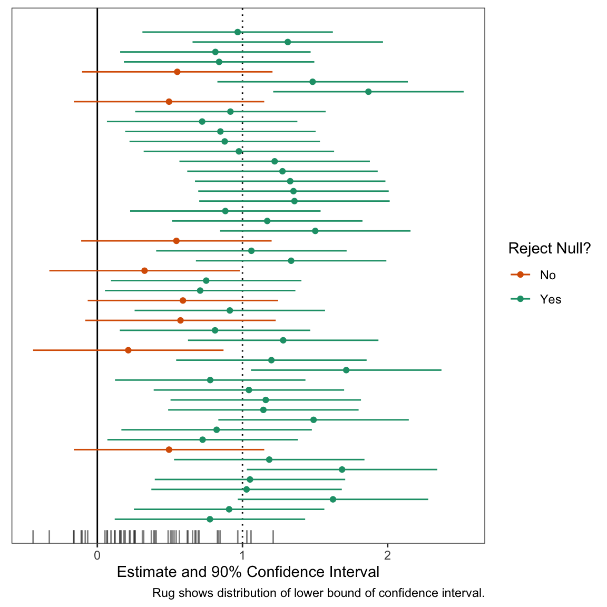
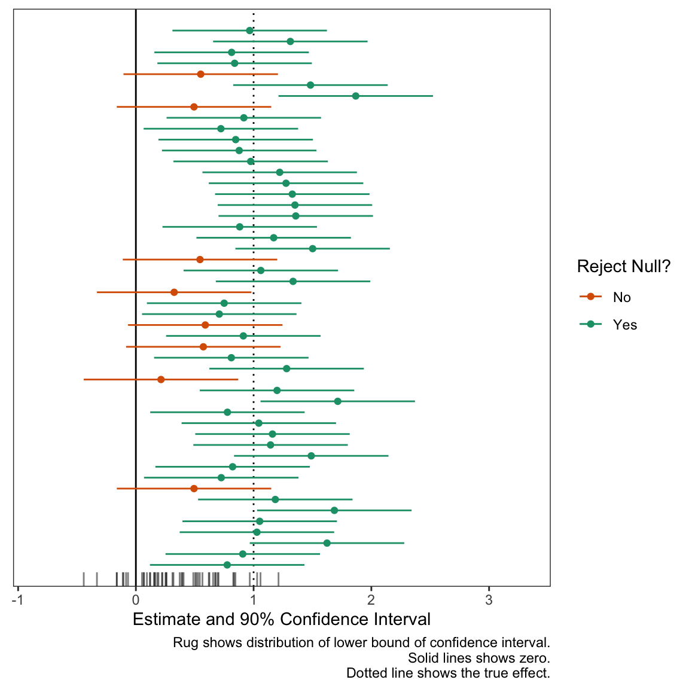

Teaching Confidence Intervals and Hypothesis Testing with gganimate
Showing Students Just How Noisy Confidence Intervals Are
methodology
hypothesis tests
confidence intervals
computing
R
I share R code to create a static and dynamic plot of confidence intervals that illustrate that hypothesis tests and confidence intervals are chaotic, noisy quantities.
Author
Carlisle Rainey
Published
June 1, 2023
Background
When I give students formula for confidence intervals, I find that students don’t have a sharp concept of how those confidence intervals work—even if I explain the components of the formula well.
Even though they understand—seemingly very well—that the point estimate is noisy, they struggle to conceptualize that a confidence interval can often include values on the incorrect side of zero. Stated differently, they have a hard time understanding how a hypothesis test can fail to reject the null (when the null is incorrect). Their intuition suggests that a “test” should give you the correct answer.
Because their instincts are wrong, I want to undermine their trust in hypothesis tests. I want them to feel the riskiness of poorly-powered experiments that consistently nestle confidence intervals right up against zero. I want them ready and eager to work hard to avoid that risk—to make sure they have adequate statistical power.
To help undermine their confidence in confidence intervals, I like three exercises that mimic a test with 80% power. In each case, we are assuming that we have formulated a correct hypothesis and designed an excellent experiment with 80% power.
First, I have students roll a six-sided die. If the die produces a , then their study fails—they wasted their opportunity. See this post for details on this perspective. This simulates the riskiness of an experiment with 80% power quite well. They get lots of failed experiments in a short period of time. They become well-aware of the possibility of a failed study and grow increasingly interested in reducing this risk.
Second, I use a computer to produce a plot of many (about 50 seems right) confidence intervals from the same repeated study. I explain that the interval we will get in the study we actually conduct is like a random draw from this collection. (See below for an example of this figure.)
Third, I make the plot dynamic. I find that dynamics make the plot more memorable and convey the (appropriate) idea that hypothesis tests and confidence intervals are chaotic, noisy quantities.
These exercises make it clear that failed studies are real possibilities. Hopefully they clearly see and “feel”:
The hypothesis test is no oracle. It will not consistently reject the null (even when the null is wrong) unless you supply overwhelming evidence. In experimental design, that’s not a task, that’s the task.
Below, I walk through the plots I use in parts 2 and 3.
An Experiment that We Can Repeat
First, let’s choose to conduct an experiment with 80% power. To get this, we’ll suppose that the true effect is 1 and the standard error is 0.4. To obtain 80% power, you can use the guideline that the standard error should be about 40% of the true effect (or the true effect divided by 2.48). I’ll show where these guidelines come from in a future post. With the true effect and standard error in hand, we can compute the long-run properties of the experiment.
But these long-run properties remain a bit abstract and seem “distant” from the practical implications of our particular experiment. This is where the three exercises above come in handy.
The second exercise is a static plot. The plot shows 50 intervals; we can see that several include zero. These are wasted opporunities. We set out to reject a null hypothesis that the effect was less than or equal to zero, and we failed to do that.
Code
# number of studies to simulaten_studies <-50# a data frame of studies set.seed(123)ests <-tibble(study_id =1:n_studies,est =c(rnorm(n_studies, true_effect, se))) %>%mutate(reject_null =ifelse(est -1.64*se >0, "Yes", "No")) # plot the confidence intervals for each studygg <-ggplot(ests, aes(x = est, y = study_id, xmin = est -1.64*se, xmax = est +1.64*se, color = reject_null)) +geom_vline(xintercept = true_effect, linetype ="dotted") +geom_vline(xintercept =0) +geom_point() +geom_errorbarh(height =0) +geom_rug(sides ="b", aes(x = est -1.64*se, color =NULL), alpha =0.5, length =unit(0.025, "npc")) +scale_color_manual(values =c("No"="#d95f02", "Yes"="#1b9e77")) +# from https://colorbrewer2.org/#type=qualitative&scheme=Dark2&n=3theme_bw() +theme(panel.grid =element_blank(),axis.text.y =element_blank(),axis.ticks.y =element_blank(),axis.title.y =element_blank()) +labs(x ="Estimate and 90% Confidence Interval",y ="Study ID", color ="Reject Null?", caption ="Rug shows distribution of lower bound of confidence interval.") # print plotprint(gg)

Dynamic Plot
The static plot above is nice, but doesn’t convey an appropriate sense of randomness or “you don’t know what you’ll get this time.” To convey this feeling, I like to add dynamics. In particular, I like a confidence interval that’s moving and you’re not sure if it will cover zero or not. This conveys the sense that “something bad might happen” with each draw. Even though only about 10 of the 50 confidence intervals will cross zero, you feel the danger on all 50 simulations.
In designing this plot, two features are in tension:
The plot conveys the ideas.
The code is easy to update and understand.
In the past, I’ve prioritized making the plot look exactly like I want. But there are concrete downsides to using hacky solutions—using functions in ways not intended. The code is brittle and difficult. For examples that clearly convey the ideas, see Presidential Plinko and this “raindrop” plot. These are great ways to convey the randomness, but producing these plots requires some “tedious” coding.
With this code, I tried to illustrate the concept well while avoid hacky solutions to minor problems. This makes the code easier to understand, change, and update.
First, let’s start by creating the data frame to plot. We need to make two small changes to the data frame above. These are both hacks, but worth it.
Add a dummy row to the data frame to trick gganimate into starting with an empty plot.
Add a grouping variable to indicate the states for the transitions. This is simply a row ID variable.
Code
# load packageslibrary(gganimate)# add two things to the data frame of confidence intervals# 1. an initial row with study_id = 1 and est = NA so that # the plot starts empty (gganimate would start with the # first observation in place otherwise).# 2. a group variable that defines the row. This is the same# as the study_id, except the dummy row from (1) and the # actual first row have different groups.animate_data <-bind_rows(tibble(study_id =1, est =NA), # study_id = 1, est = NA ests # combine dummy row with ests data frame from above ) %>%mutate(group =1:n()) # group (row index)
Now let’s plot the confidence intervals much like above, except with expanded scales to give some more room for movement.
Code
# same ggplot, except three annotated changesgg_exp <-ggplot(animate_data, aes(x = est,y = study_id, xmin = est -1.64*se, xmax = est +1.64*se, color = reject_null, group = group)) +geom_vline(xintercept = true_effect, linetype ="dotted") +geom_vline(xintercept =0) +geom_point() +geom_errorbarh(height =0) +geom_rug(sides ="b", aes(x = est -1.64*se, color =NULL), alpha =0.5, length =unit(0.025, "npc")) +scale_color_manual(values =c("No"="#d95f02", "Yes"="#1b9e77")) +theme_bw() +theme(panel.grid =element_blank(),axis.text.y =element_blank(),axis.ticks.y =element_blank(),axis.title.y =element_blank()) +labs(x ="Estimate and 90% Confidence Interval",y ="Study ID", color ="Reject Null?", caption ="Rug shows distribution of lower bound of confidence interval. Solid lines shows zero. Dotted line shows the true effect.") +# new scales herescale_x_continuous(expand =expansion(add =c(0.6, 1))) +scale_y_continuous(expand =expansion(add =2))# print plotprint(gg_exp)
1
Use dataset with group variable.
2
Set group explicitly.
3
Expand x- and y-axis.

Now let’s add the animation. I like the confidence intervals to be shooting toward zero. This gives the feeling that “it might cross!” and makes the fear of a failed study real for each simulation.
Code
# add dyamics to the plotanim <- gg_exp +transition_states(states = group) +# how points enterenter_drift(x_mod =2) +enter_grow() +enter_recolor(color ="black") +ease_aes(color ="exponential-in") +# how points exit/remainexit_fade(alpha =0.3) +shadow_mark(alpha =0.3)# make magic happen!animate(anim, duration = n_studies, fps =10, height =6, width =8, units ="in", res =150)
1
‘gg’ is created earlier. It’s the plot we want to make dynamic.
2
The transition_states() function from gganimate creates an animation transitioning between different states of the data. In this case, the argument states is set to group. This makes each group (each row in the data frame animate_data) appear in the plot, one at a time.
3
The enter_drift() function describes how new data points enter the frame. x_mod = 2 makes new data enter by drifting along the x-axis 2 points from the right of their ending position.
4
The enter_grow() function describes how new data points enter the frame. In this case, it makes them will grow from a size of 0 to their ending size.
5
The enter_recolor() function again describes how new data points should enter the frame. Here, it makes the points and CIs change the color from black to their ending color as they appear. I want the final color to be a bit of a surprise, so I start them as black.
6
The ease_aes() function determines how the aesthetics of the points change over the transitions. color = "exponential-in" means the color change will be at an exponential rate at the start of the transition. This makes the color change really fast at the end of the transition to maintain the surprise of the result.
7
The exit_fade() function describes how data points leave the frame. alpha = 0.3 specifies that points will fade out to 30% transparency when they exit (when the next data point reaches its position).
8
shadow_mark() function keeps past data points in the frame. alpha = 0.3 sets the transparency of the shadow marks to 30% to match the exit_fade() transparency.
Summary
The dynamic plot above is a good tool to help students understand that confidence intervals can quite easily include values on the wrong side of zero. Stated differently, it’s easy for a hypothesis test to fail to reject the null (when the null is wrong). Their intuition suggests that the test should tell you the correct answer.
The exercises above (appropriately) undermine their trust in hypothesis tests. I want them to feel the riskiness of poorly-powered experiments that consistently nestle confidence intervals right up against zero. I want them ready to work hard to avoid that risk—to make sure they have statistical power. Hopefully, they see that carefully building power into your experiment isn’t a task, it’s the task of experimental design.
As a concluding example, here’s the same dynamic plot for a study with about 98% power. Notice how “safe” this study feels compared to the one above with 80% power. I think this plot does a good job a translating probabilities into an appropriate sense of “danger.”
Code
# study parametersse <-0.27# 1/3.64# identify effects of interesteoi <-tribble(~Effect, ~Description, true_effect, "True Effect (known in this exercise)") # compute quantities of interest regarding powereoi %>%mutate(Power =1-pnorm(1.64*se, Effect, se),Power = scales::percent(Power, accuracy =1),`Type S`= retrodesign::type_s(Effect, se)$type_s,`Type S`= scales::number(`Type S`, accuracy =0.01),`Type M`= retrodesign::type_m(Effect, se)$type_m,`Type M`= scales::number(`Type M`, accuracy =0.01),Effect = scales::number(Effect, accuracy =0.01)) %>%pivot_longer(cols = Effect:`Type M`) %>% kableExtra::kable(format ="markdown", col.names =NULL)# a data frame of studies ests <-tibble(study_id =1:n_studies,est =c(rnorm(n_studies, true_effect, se))) %>%mutate(reject_null =ifelse(est -1.64*se >0, "Yes", "No")) animate_data <-bind_rows(tibble(study_id =1, est =NA), # study_id = 1, est = NA ests # combine dummy row with ests data frame from above ) %>%mutate(group =1:n()) # group (row index)# same ggplot, except three annotated changesgg_exp <-ggplot(animate_data, aes(x = est,y = study_id, xmin = est -1.64*se, xmax = est +1.64*se, color = reject_null, group = group)) +geom_vline(xintercept = true_effect, linetype ="dotted") +geom_vline(xintercept =0) +geom_point() +geom_errorbarh(height =0) +geom_rug(sides ="b", aes(x = est -1.64*se, color =NULL), alpha =0.5, length =unit(0.025, "npc")) +scale_color_manual(values =c("No"="#d95f02", "Yes"="#1b9e77")) +theme_bw() +theme(panel.grid =element_blank(),axis.text.y =element_blank(),axis.ticks.y =element_blank(),axis.title.y =element_blank()) +labs(x ="Estimate and 90% Confidence Interval",y ="Study ID", color ="Reject Null?", caption ="Rug shows distribution of lower bound of confidence interval. Solid line shows zero. Dotted line shows the true effect.") +# new scales herescale_x_continuous(expand =expansion(add =c(0.6, 1))) +scale_y_continuous(expand =expansion(add =2))# add dyamics to the plotanim <- gg_exp +transition_states(states = group) +# how points enterenter_drift(x_mod =2) +enter_grow() +enter_recolor(color ="black") +ease_aes(color ="exponential-in") +# how points exit/remainexit_fade(alpha =0.3) +shadow_mark(alpha =0.3)# make magic happen!animate(anim, duration = n_studies, fps =10, height =6, width =8, units ="in", res =150)